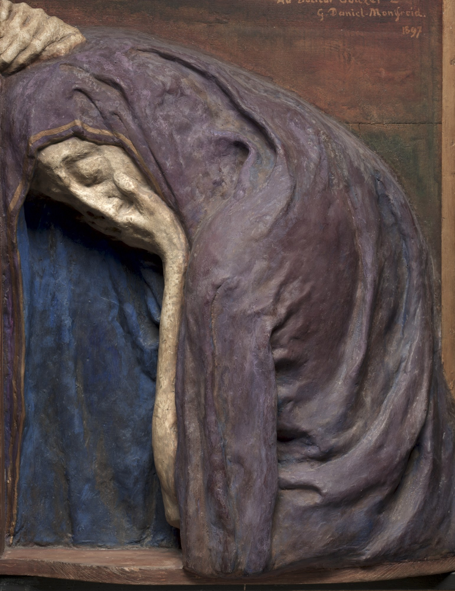

Mater Dolorosa (The Virgin Mary Mourning)
Georges-Daniel de Monfreid · 1897 · Painted plaster and wood · 73.7 × 59.1 × 17.8 cm · Cleveland Museum of Art
Free to use
Open in The ArtchiveFull-size file ↗
More like this



Georges-Daniel de Monfreid · 1897 · Painted plaster and wood · 73.7 × 59.1 × 17.8 cm · Cleveland Museum of Art
Free to use
Open in The ArtchiveFull-size file ↗